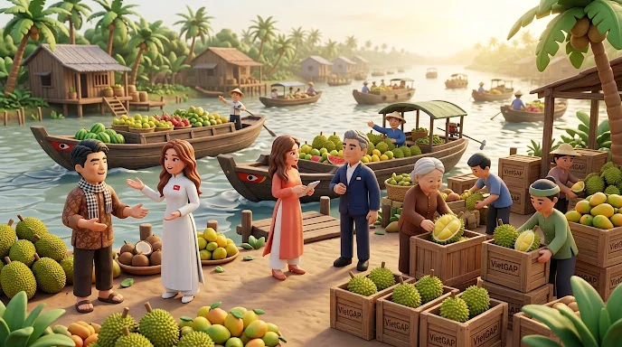

Hộ Chiếu Sầu Riêng
Đưa sầu riêng Việt ra thế giới qua 6 vụ: mã số vùng trồng, nghị định thư kiểm dịch với Trung Quốc, chính ngạch – tiểu ngạch, đông lạnh và thị trường cao cấp. Đội 5 vai đấu các đối thủ AI. Chọn một chế độ bên dưới để bắt đầu.

Bản đồ 3D
Đi lại trên bản đồ giữa các trạm, gặp đối thủ và cố vấn trực tiếp, nghe giọng đọc tường thuật từng vụ.
- Hub 3D đi lại được, có trạm cho từng kênh
- Có sẵn giọng đọc (🔊 Nghe)
Bản lớp học
Luồng dạng thẻ với đầy đủ bộ quyết định lớp học: khuyến nghị theo vai, mô phỏng «Nếu – Thì», hỏi Lumina và phiếu quyết định — mỗi lời khuyên của cố vấn có thể được đọc to.
- Đầy đủ «Nếu – Thì» và hỏi Lumina
- Giọng đọc theo từng cố vấn (🔊) và từng vụ
Giảng viên? Xem kịch bản lớp học →
© 2026 PGS.TS. Phan Anh Tú & NCS. Đỗ Thùy Hương · Trường Kinh tế, Đại học Cần Thơ
Cite (APA 7): Phan, A. T., & Do, T. H. (2026). Hộ Chiếu Sầu Riêng (Durian Passport): a 6-season durian-export simulation for Vietnam–China trade [Computer software]. https://doi.org/10.5281/zenodo.23307827
⭐ Mã nguồn (tách từ BizOn): github.com/thuyhuongctu/Durian-Pasaport